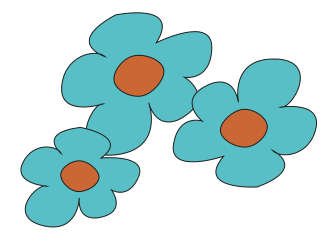

Thrifting kan de toekomst beïnvloeden
De mode-industrie, met name fast fashion, draagt aanzienlijk bij aan milieuvervuiling en sociale onrechtvaardigheid. Toch bieden bewegingen richting duurzame, ethische en herbruikbare mode hoop voor een bewustere toekomst.
Tweedehands winkelen is een groeiende trend die de levensduur van kleding verlengt door het een tweede leven te geven. Als de vraag naar tweedehands kleding echter stijgt, kunnen de prijzen ook omhoog gaan, wat de toegankelijkheid kan beperken.
Wat kunnen we doen?
Merken moeten transparantie, verantwoordelijkheid en duurzame praktijken prioritiseren, terwijl consumenten meer doordachte aankopen kunnen doen en bedrijven kunnen steunen die zich inzetten voor sociale en ecologische rechtvaardigheid. Zo kan er een mode-ecosysteem gecreërd worden dat zowel de planeet als de mensen die de kleding maken respecteert.
Hergebruik van textielproducten
Onderzoek toont aan dat hergebruik van T-shirts en broeken de hoeveelheid afval met zo'n 25% tot 30% vermindert.
Thrift stores kunnen textielverspilling tegen gaan, waardoor dit overproductie kan verlagen. Vintage stores zouden overproductie dus kunnen beïnvloeden op deze manier.
Dan heb je nog Upcycling, een creatief proces waarbij afval omgezet wordt in waardevolle producten. Dit wordt ook gezien als een duurzame oplossing, hoewel dit nog weinig toegepast wordt in de industrie.